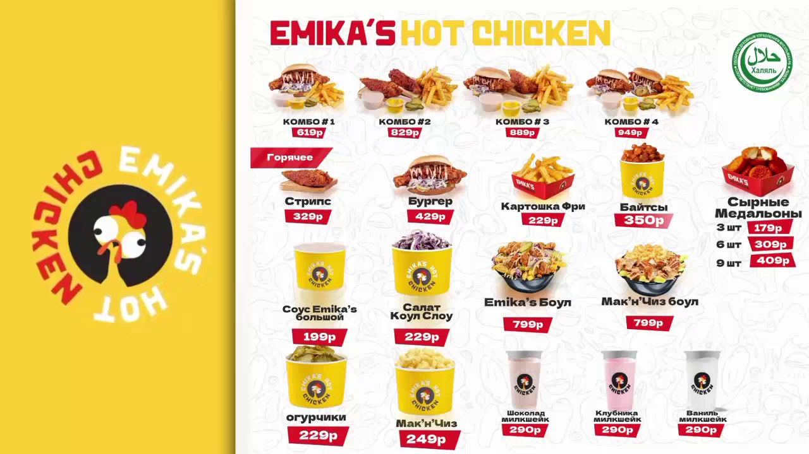
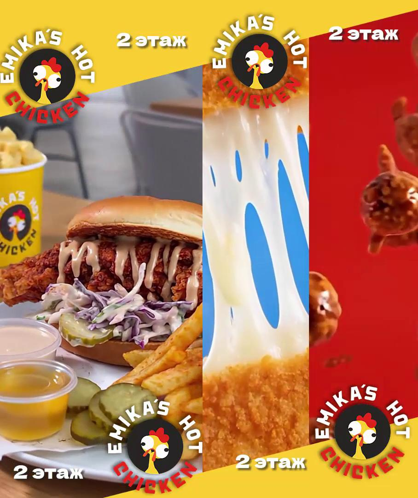

videomenu2_44min.mp4
Горизонтальное меню (тестовый вариант). Повтор 44 мин — несколько копий на флешку на весь день.

Горизонтальное меню (тестовый вариант). Повтор 44 мин — несколько копий на флешку на весь день.

Вертикальный экран Eat Arena, первый этаж.

Вертикальное второе меню с динамикой.
Вертикальное меню — вторая копия для второго экрана.